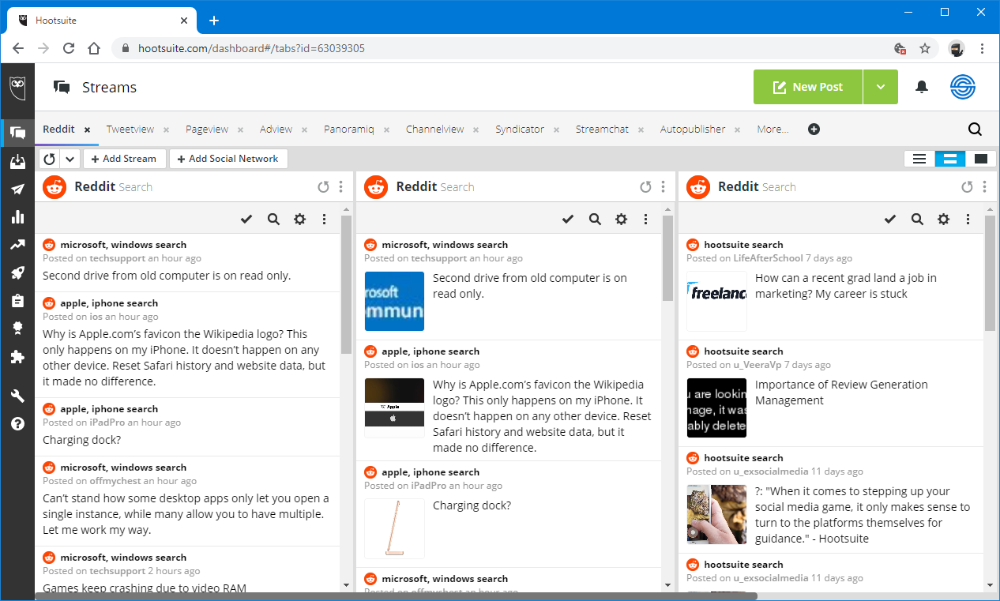

Reddit je webová stránka, kde si užívatelia môžu prezerať a zdieľať odkazy alebo textové príspevky s cieľom ich zdielať s ostatnými. Obsah na Redditu zahŕňa rôzne formáty, ako sú obrázky, videá, správy a diskie. S obrovským množstvom používateľov, Reddit sa stal jednou z najobľúbenejších webových stránok na svete, ponúkajúcou platformu pre sledovanie aktuálnych udalostí a trendov.
